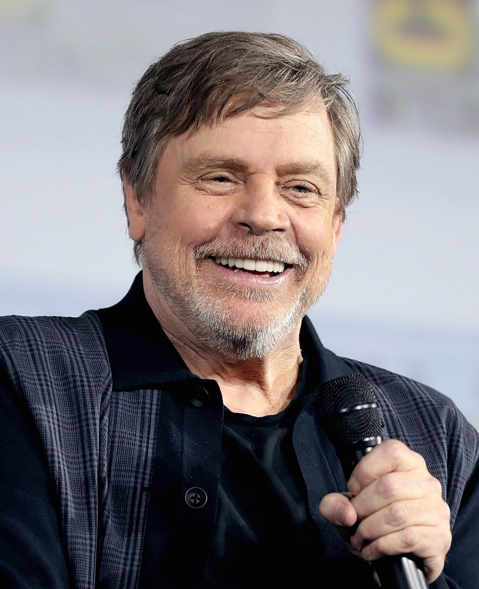

Mark Hamill
Mark Richard Hamill (ur. 25 września 1951 w Oakland w Kalifornii) – amerykański aktor, scenarzysta, producent filmowy i reżyser. Najbardziej znany z roli Luke’a Skywalkera w Gwiezdnych wojnach George’a Lucasa (Części IV–IX: Nowa nadzieja, Imperium kontratakuje, Powrót Jedi, Przebudzenie Mocy, Ostatni Jedi i Skywalker. Odrodzenie). Podkładał głos w filmach i serialach animowanych, w tym na jako Joker / Jack Napier w serialu Batman (Batman The Animated Series), a także w grach komputerowych jako Joker w Batman: Arkham Asylum, Batman: Arkham City i jako Watcher (obserwator Wojny) w Darksiders. W 2018 otrzymał własną gwiazdę w Alei Gwiazd w Los Angeles znajdującą się przy 6834 Hollywood Boulevard.
Po występie w jednym z odcinków serialu CBS Dyrektor szkoły (Headmaster, 1970) z Andym Griffithem i sitcomie NBC Bill Cosby Show (The Bill Cosby Show, 1970), wystąpił jako Kent Murray w operze mydlanej ABC Szpital miejski (General Hospital, 1972–1973), a potem jako Doobie w sitcomie ABC The Texas Wheelers (1974–1975).
Kiedy Robert Englund po przesłuchaniach do roli w dramacie wojennym Francisa Forda Coppoli Czas apokalipsy (Apocalypse Now) szedł przez korytarz, odbywały się także przesłuchania do filmu George’a Lucasa Gwiezdne wojny. Wśród kandydatów do roli Luke’a znajdowali się: Andrew Stevens, Robby Benson, Will Seltzer, Robert Englund, Charles Martin Smith i William Katt. Wówczas Englund zdał sobie sprawę, że jego przyjaciel Mark Hamill, byłby idealny do roli Luke’a Skywalkera. Zasugerował więc Hamillowi, by stanął do castingu; Hamill zrobił tak i otrzymał rolę. Za kreację Luke’a Skywalkera zdobył dwie nagrody Saturna; w Imperium kontratakuje (1980) i potem w Powrót Jedi (1983).
Po sukcesie Gwiezdnych wojen, okazało się, że publiczność identyfikuje go ściśle z rolą Luke’a Skywalkera, po której stał się idolem nastolatek i pojawił się w magazynach dla nastolatek takich jak „Tiger Beat”. Powrócił na ekran w głównej roli w komedii sensacyjnej Corvette Summer (1978) z Annie Potts, dramacie wojennym Wielka czerwona jedynka (The Big Red One, 1980) jako szeregowy Griff u boku Lee Marvina i Roberta Carradine oraz dramacie muzycznym Ronalda F. Maxwella Noc, kiedy w Georgie zgasły światła (The Night the Lights Went Out in Georgia, 1981) z Kristy McNichol i Dennisem Quaidem.W 1980 pojawił się gościnnie w Muppet Show (The Muppet Show), a potem także w serialach: Niesamowite historie (Amazing Stories, 1986) i Nowa seria Alfred Hitchcock przedstawia (The New Alfred Hitchcock Presents, 1987).
W 1981 zebrał pochlebne recenzje za swoje występy na scenie w sztukach na Broadwayu: Amadeusz jako Wolfgang Amadeus Mozart i Człowiek słoń (The Elephant Man) jako John Merrick u boku Kevina Conwaya. W 1985 za rolę Tony’ego Harta w Harrigan n 'Hart był nominowany do Drama Desk Award. Na początku roku 1986 trafił na scenę off-Broadwayowską Union Square Theatre jako Gordon Miller w przedstawieniu Room Service. W 2003 powrócił na Broadway – Coconut Grove Playhouse jako Michael Minetti w spektaklu Six Dance Lessons in Six Weeks z Rue McClanahan. W sierpniu 2018 dołączył do obsady serialu stacji History Templariusze (Knightfall) jako Talus, weteran zakonu.